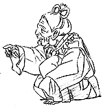
制作日誌 1998年3月
98.3.3（火）
・各部署のスタッフ達が集まって、作品全体の色彩会議が行われる。
・今週中に現在の仕事の状況について動画スタッフを集めて話しをすることになる。
・昨年末の引っ越しから約2カ月半が経過した野中氏だが、難航していた部屋の片付けがついに終了し、来週中に「引っ越し記念新居お披露目パーティ」を開催することに（実は片付け度はまだ90％程だが、野中氏はその日までには100％にすると豪語）。
98.3.4（水）
・高畑監督と美術陣との打ち合わせが行われる。
・「心配しなくていいですよ、簡単な検査ですから」と言われてOKした健康診断の二次検査が、意外と大変なことが発覚。腸にバリウムを入れて、写真を撮る検査で、確かに検査自体はものの2、30分で終わるのだが、前日に下剤をたんまり飲まされ、腹の中を空っぽにする作業があるらしい。「だまされた」と愕然となる。まあ自転車シーズンに備え、増えすぎた体重が少しは減ってくれるのを喜ぶしかないのか…。
・「一杯のかけそば」は何故感動したんだっけ？ とメインスタッフを中心に一部で話題になるも、誰を細かい部分を記憶していない。しょうがないので本屋に制作居村氏が買いにいったら、なんと絶版。本の命は短い…
98.3.5（木）
・神村氏が動画スタッフに、現在の状況と今後の予定についての説明会を開く。
・最近すっかり調子の悪くなったコピー機を、再び修理してもらおうとメーカーの人を呼ぶが、帰ったあとにまたネジが落ちていた。今年何個目のネジだろう…。
・夕方から雪が降り出し、中央線が間引き運転状態に。（雪ダイヤというらしい。）夜7時頃に野中さんが、低く渋い声で「今日は大雪の予想です。早く帰りましょう」と社内放送をかける。
・商品部・浅野さんの禁煙達成1カ月記念に、野中さんがお寿司をおごることに。便乗して業務部の女の子3人も連れていってもらう。社内放送後、いそいそと三鷹にお寿司を食べに出かける。
98.3.6（金）
・絵コンテ13CUT 89.5秒分の絵コンテ完成、総秒数は28分18秒。早速安藤氏がその13CUTを打ち合わせ。
・社内の何人かが日本アカデミー賞の授賞式に参加する。宮崎監督と鈴木プロデューサーはテレビの取材でサハラ砂漠に行っているために出席できなかったが、話しによると何故かその理由が「次回作の構想を練りに」ということになっているらしい。
98.3.7（土）
・山森氏、B-9～16まで8CUT分を打ち合わせ。
・制作で乗っていた鈴木プロデューサーの元愛車シビックシャトルが間もなく車検。もうあまりにボロイ（走行距離も10万キロを超え、信号待ちでエンジンが止まることもしばしば）のでついに買い換えることに。制作部には車のカタログが山。
98.3.9（月）
・朝からジブリの前で、東京電力が電線の工事をしていたが、クレーン車の足が制作車シャレードのバンパーを直撃（一寸大げさか）、ナンバープレート等を破壊する。どうせならシビックにしてくれりゃ…。
・近藤勝也氏の一寸した手伝い仕事の説明会が開かれる。
98.3.10（火）
・近藤勝也氏の仕事の作打ちあり。
・一村氏が川端氏が使うパワーブックを購入するため、制作の鈴木君を連れて秋葉原へ。安い機械を求めて、秋葉原中の怪しい店屋を訪ね歩く。鈴木君によればその途中、店頭で流れていたガンダムゲームのデモ画面に異常に感心していたとか。ジブリに帰ってからも「あのゲームはいいよ～」と言いまくっていた。ということで川端氏用にパワーブックの3400を購入。
・メインスタッフルームの小改造。今まで田中直哉、武重両氏が美術用の机を二人で使っていたが、やはり狭いということで、もう一台入れることに。
98.3.11（水）
・東京女子医大に二次検査へ向かう。レントゲン台の上で○○の穴に管を突っ込んで、バリウムと空気を入れ、そのままの状態で上下左右いろいろな方向に体の向きをかえるよう命令されるのだ。ああ、いったいこの不快感、屈辱感はなんだろう。もう二度とやらんぞ。
・あるCUTのカメラワークをコンピュータでシュミレーションするため、担当の原画マンが、参考の為に2、3日CG部に張り付いて勉強することに。
・東京ドームで野球をしよう。という企画が持ち上がる。深夜12時から翌朝6時までだと○十万円で借りることが出来るらしい。何チームか集めればワリカンでなんとかなる金額である。はたして実現するのか。
98.3.12（木）
・今回の作品の、複雑化した作業手順を少しでも分かりやすくするため、注意事項を高畑監督が文章にまとめ、それに動画チェックの斎藤氏が図解を入れた「本編画面作成の基本方針」なるものを作成する。
・野中氏の新居で引っ越し記念パーティが開かれる。出席者全員、そのあまりの広さと、美しさに唖然となる。後は嫁さんがいれば完璧だ。ほとんど同じ家賃を払い狭苦しい部屋に住んでいる私は当然嫉妬に狂う。お決まりのピザと寿司を食いながら、野中氏のLDコレクションを鑑賞。初めて見る人も多かった輸入盤フライシャーのスーパーマン「メカニカルモンスターズ」にはみんな大爆笑。
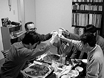
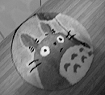
98.3.13（金）
・例のコンピュータでカメラワークを考えるCUTの打ち合わせが、監督、原画担当の山森氏、CG部の面々を集めて行われる。
・ ジブリ横の畑脇にある駐車場に勝手に車を停めた輩がいるらしく、警察が「ジブリの車では？」と訪ねてくるも、社内に該当者無し。パトカーが近所を怒鳴りながらまわった所、犯人が出てきたが、人の駐車場に勝手に車を停めるとは、その神経が分からん。
・一村教授が管理するサーバーの名前が、木星の衛星イオ、ガニメデ、カリスト、エウロパに決定。私が提案したフルトヴェングラー、クナッパーツブッシュ、チェリビダッケ等の指揮者シリーズは長すぎると却下。
98.3.14（土）
・11CUT、49.5秒分の絵コンテが上がる。
・動画用紙問題再燃。高畑監督が「ラフ原画を描く場合、紙は薄くて、しかもフレームが入っていた方が描きやすいのではないか」と社内の原画陣に緊急アンケートを行ったところ、大部分の人がその意見に賛成。急遽1万枚程発注。
98.3.16（月）
・絵コンテ、10CUT分50秒アップ。
・デスク神村氏が風邪でダウン。お休み。
・緊急避難的ではあるが、薄めの動画用紙を修正用にカットしたものを作ることになり、1,000枚ほど下6ミリを裁断機で切る。
・テレビ番組制作のため、サハラ砂漠へ行っていた宮崎監督と鈴木プロデューサーが無事帰還。下の絵は宮崎監督が描いた、現地で乗った飛行機の外観および機内の様子。乗組員全員が前に移動して、重心を前に保たないといけないという、結構危ない飛行機だったらしい。
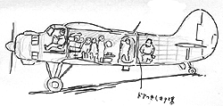
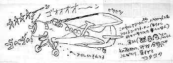
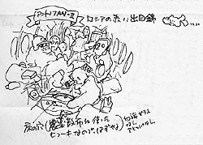
98.3.17（火）
・12時より、ジブリ近くに建設中であるニ馬力のアトリエの上棟式が行われる。建設を担当している藤和の職人さんや、日本テレビの奥田さん、徳間書店の古林さん、ジブリからも保田さん、高畑さんら数多くの人が出席する。宮崎監督デザインによる建物が初公開され、吹き抜けの空中回廊等、一寸変わった内部を出席者全員が堪能する。
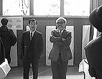
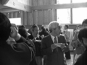
・テレマンの浦谷さん等が来社し、「もののけ姫」絡みで何人かに追加インタビュー等を行う。
98.3.18（水）
・美術の二人が再びいくつかのシーンのボードを高畑監督に見せる。
・96年5月以来久々の企画検討会が来週半ばに開催される。企画提案者とレポーターは宮崎監督。早速社内にポスターを掲示。
・デスク神村氏、寝違えて首がまわらず。
・制作部を中心にいまごろ「ベル○ルク」にはまっている人が数人いる。
・宮崎監督、鈴木プロデューサーのサハラ砂漠での写真を入手（撮影者はボイス・アニメージュ編集長の古林英明さん）。この時の模様は、テレビと雑誌で紹介される予定です。詳しくは後ほど。
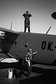
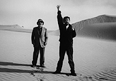
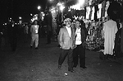
98.3.19（木）
・ラフ原画用紙が来週火曜日に上がってくる予定。
・夜8時から、高畑監督以下メインスタッフ他全9名が、下北沢のすずなりで平田オリザの舞台「東京ノート」を観劇。田辺氏は何度も彼の舞台は見ていたそうだが、初めて観た私も大感激。計算され尽くされた上で同時に進行するいくつかの会話と間、怒鳴らない自然な発声、等々感心することばかり。高畑監督も含めて全員が満足の様子。
98.3.20（金）
・制作居村氏等を中心に、朝から夕方までぶっ通し倉庫の整理が行われる。
・今回の作品は、全体のイメージを水彩で描かれたボードを基にして各部署が作業を行っているが、同時に作業を進めるためボードを複製しようということになり、会社の古いカラーコピー、最新型のカラーコピー、コンピュータに取り込んでプリンターで出力、等の方法をテストする。しかしどれも水彩の微妙な色合いを表現することが出来ず却下。なにか良い方法はないのか。
98.3.23（月）
・宮崎監督が、立体のデータをCG部に持ち込み、プリントアウトを依頼。もう辞めたからジブリには来ない、と言っていたワリには、もう何度も来ているような…。
・日本テレビの奥田さんに、三人目の子供が誕生。待望の男の子である。ところで奥田家の子供の名前には必ず「千」の字が使われているのだが、当然この子にも「千」の字を使うべくみんなで名前を考える。ジブリに来た奥田さんに、鈴木プロデューサー、高畑監督、宮崎監督らが、「奥田千一（せんいち）にしましょう（某中日ファン）」「奥田千利休は？」「お金が儲かりそうだから奥田千両ってのはどうでしょう」「僕と同じ名前で奥田千義がいいですよ」と好きかってなことを言いまくっている。
98.3.24（火）
・山田氏6CUT分の作打ちアリ。
・小金井も桜の季節が近くなり、高畑監督も昼休み等に近所を散策しようと、冬の間駐輪場にほっぽらかしてあった自分の自転車の水洗いを始める。ところがその現場を、春休みを利用してジブリ見学（内部の見学は全てお断りしています。スイマセン）に来ていたファンに見つかり、写真をバシャバシャ撮られていた。
・田辺氏が阿佐ヶ谷の風呂屋の前で、ジブリからマッドハウスに移った笹木氏とばったり会う。なんでも遅くまで営業してる風呂屋の探索中だったらしい。
98.3.25（水）
・新会議室にて、鈴木プロデューサーの秘書の面接が行われる。面接官は田居女史と米沢氏。
・デジタルペイント用の動画注意事項を作成中。色鉛筆問題などかなり大変。
・ダビッドの両親が来月末に来日することになり、ダビッドが日本の名所を案内することになる。計画を高畑監督に見せ相談していたが、計画の筆頭にあった富士山登山は山開きがまだなので却下となる。伊勢、京都、奈良等を回るらしい。
98.3.26（木）
・火曜日に出来上がると言っていたラフ原画用紙がようやく完成し、とりあえず四千枚納入される。
・7時半より会議室にて企画検討会が行われる。作品は「霧のむこうのふしぎな町」第二回、レポーターは宮崎監督。前回この企画を取り上げたのが3年10カ月前のため、どんな結論を出したのか、そもそも企画提案者が誰だったかすら覚えていない。こんな状態なので、参加者は初めてこの企画に向かう気持ちで意見を出し合う。宮崎監督もみんなと話すのが久しぶりなので異様に元気である。そのため検討会は予定時間を超え、2時間半以上にも及ぶ。
98.3.27（金）
・鈴木プロデューサーが宮崎監督に、無理やり鍼へ連れていかれる。鈴木プロデューサー曰く「あまりきかなかった」。
・昨日発売された近藤喜文氏の「ふとふりかえれば」がジブリにようやく送られてくる。とてもいい本なので買ってください。
・高崎映画祭へ出席するため、朝早く出発しなければならない高畑監督は、10時前に早々と退社。明日はフレデリック・バック氏と対談をする予定。
98.3.28（土）
・高崎映画祭へ、高畑監督、鈴木プロデューサーらが出かけてしまったため、社内が妙に静か。この時とばかりに、普段遅くまで会社に残っている人も早々に帰っていく。
98.3.31（火）
・アニドウのなみきたかし氏と共にフレデリック・バック夫妻が来社。バーでジブリスタッフと一緒に、アニドウが作ったアニメーション「この星の上に」を鑑賞した後、鈴木プロデューサーと高畑監督の案内で小金井公園にある「江戸東京たてもの園」に出掛ける。ダビッドとアレックスも通訳で参加。あまり時間も無かったが、とても楽しんでくれた様子。因みに高畑さんがバックさんに建物の説明をしている間、なみき氏と鈴木プロデューサーはその後ろで、互いを罵倒しあう意味不明の掛け合い漫才を展開。仲がいいのか、わるいのかまったく不明。
・マック版QARのお試しソフトがいよいよ登場。伊藤氏が早速使い方を勉強していたが、従来のQARより操作は難しそうだ。
| 次のページへ |
| 日誌索引へ戻る |
| 「もののけ姫」トップページへ戻る |